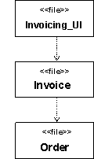

Explanation
An important use of a dependency relationship is to represent compilation dependencies. A compilation dependency exists
from one element to the elements that are needed to compile it. In C++, for example, the compilation dependencies are
indicated with #include statements. In Ada, compilation dependencies are indicated by the with clause. In Java the
compilation dependency is indicated by the import statement. In general there should be no cyclical compilation
dependencies.
Example 1:
The following component diagram illustrates compilation dependencies between source files. The Invoicing_UI file (the
top), requires Invoice, which requires Order to compile.

Figure 1: Example Compilation Dependencies (Generic)
|